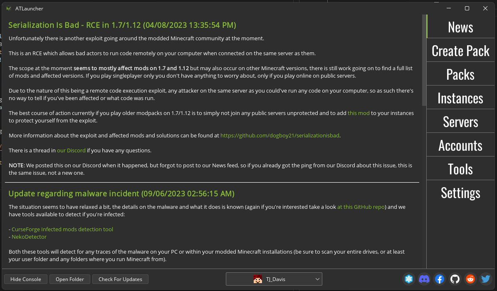
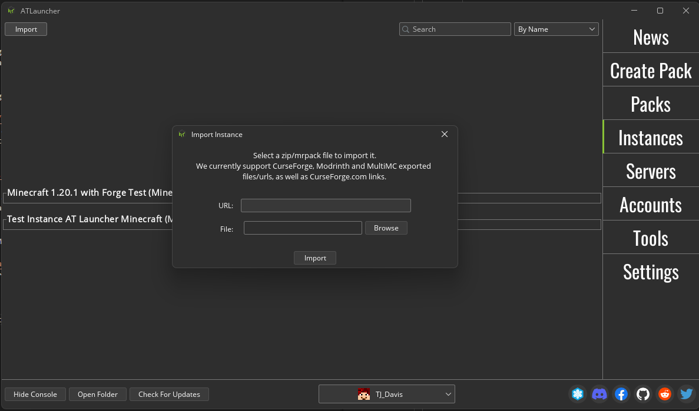
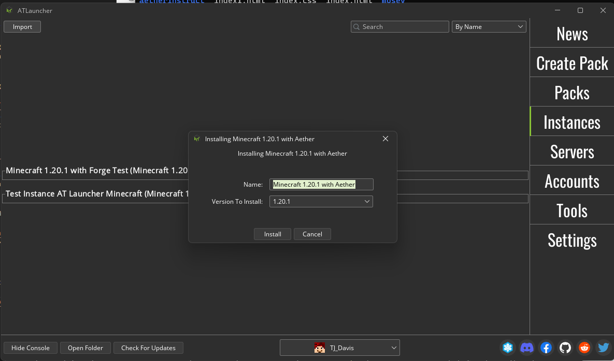
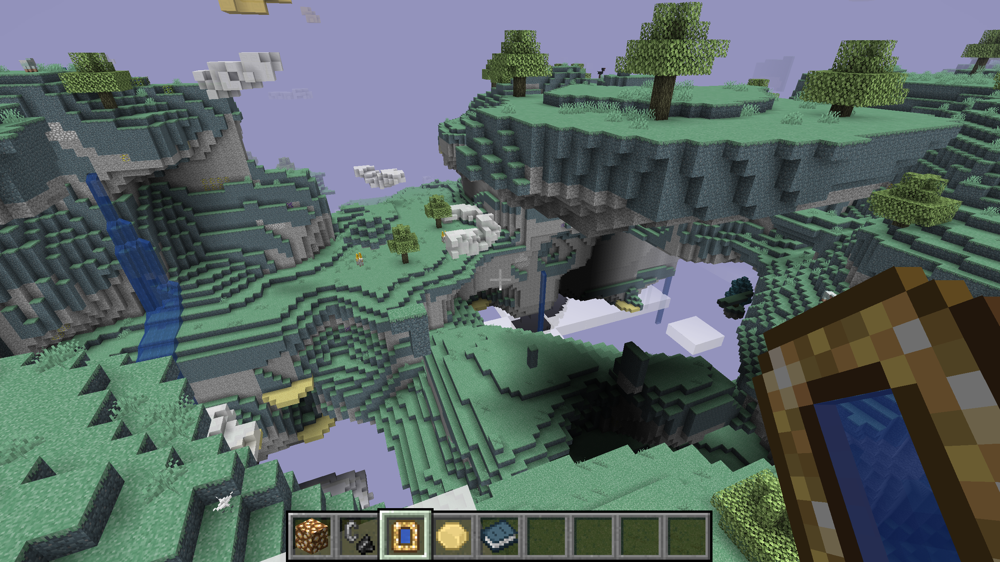
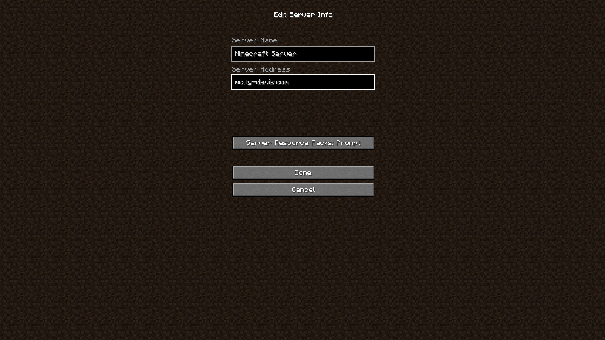

Hi there friends
I'm here to help you install the modpack so that we can all play together and have a fun time! I was able to get it up and running pretty quick, so I have no doubt that you should be able to get it up and running quick too.
What if ATLauncher isn't working?
1. Install ATLauncher and Log in
Head to the ATLauncher Downloads page and download the proper ATLauncher for your operating system. Run the installer and when installed it should look something like this:

You do need a Java Minecraft Account to play, go to the Accounts tab
on the right and enter your Microsoft account credentials. Without this you won't
be able to play.
2. Download and install the ModPack
ModPacks are available at this link. Navigate to this page and select a modpack that you want to try, then copy the link. It will show which modpack is currently being used by the server, and how to copy links.
If you copied a link from the ModPacks page,
then go to the Instances tab in ATLauncher and click Import.
Paste the link you copied into the URL text field and click Import.

Another pop up should appear. Give the installation a name and click Install.
Right now the version that we are using is 1.21.1, so make sure that that
version is selected as well (it should be automatically selected when you get to this step).

3. Start Playing Minecraft
Now under your instances tab there should be a new instance of the game with
the name that you gave it in the last pop-up menu. Click Play
to open Minecraft.
To ensure that the modpack is successfully installed, you can create a new world in Creative Mode and open your inventory. There should be a set of arrows to allow you to switch to the other mods' inventory sections, and you can try placing all the new blocks.

4. Join our Minecraft Server
From the main menu click the Multiplayer button, then click
Add Server. Give the server a name and input the address of
mc.glooble.wtf. After clicking Done, you should be able
to select the server from the list and click Join Server to join!
